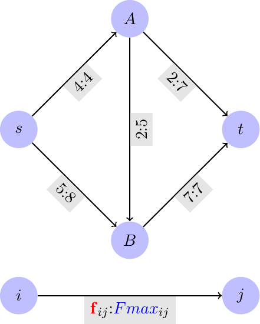
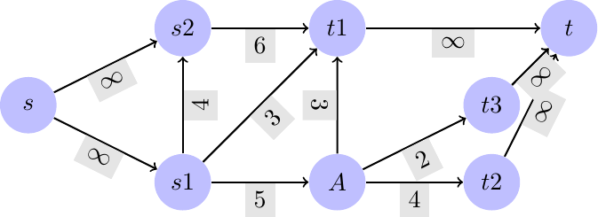
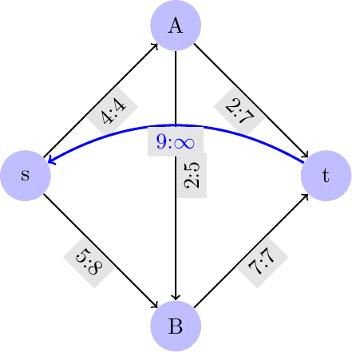
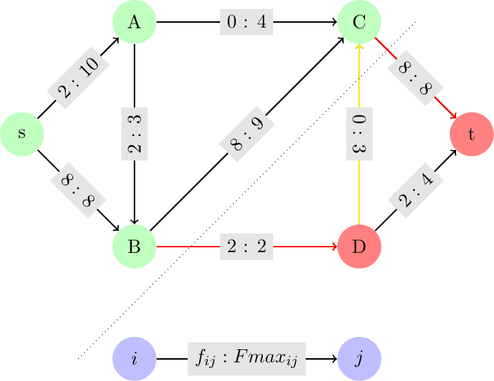

\(\newcommand{\R}{{\mathbb{R}}}\) \(\newcommand{\Z}{{\mathbb{Z}}}\) \(\newcommand{\N}{{\mathbb{N}}}\) \(\newcommand{\var}[1]{{\color{red}{\mathbf{#1}}}}\) \(\newcommand{\param}[1]{{\color{blue}{#1}}}\) \(\newcommand{\mathsc}[1]{{\normalfont\textsc{#1}}}\) \(\def\sc#1{\dosc#1\csod}\) \(\def\dosc#1#2\csod{{\rm{#1{\rm\small #2}}}}\) \(\newcommand{\set}[1]{{\sc#1}}\) \(\newcommand{\mathvar}[1]{\var{#1}}\) \(\newcommand{\mathpar}[1]{\param{#1}}\) \(\newcommand{\half}{{\small{\frac{1}{2}}}}\)
8. Maximum Flow¶
The maximum flow problem concerns finding a feasible flow in a network (i.e., a flow which satisfies upper and lower bounds on all arcs as well as the required balances at nodes) in such a way as to maximize the total quantity of flow entering or circulating in the network. While in the formulation of the minimum cost path problem a single unit of flow was considered, here the amount of the circulating flow is unknown and it is the objective we would like to maximize. As in the minimum cost path problem, also here it is assumed that the balance at every node is zero, with the only exception of the source and destination.
Before formulating the problem it is necessary to define the quantity of flow circulating in a network. Assume there exist a unique source and destination nodes, and that the source has only outgoing arcs, while the destination has only entering arcs. The value of the flow circulating in such a network is defined as the sum of flows out from the source.
It is easy to proof that flow conservation law implies that this quantity is also equal to the total flow entering the destination node

In the network above labels represent a feasible flow and the upper bound (or capacity) on each arc. The total flow out from the source node is 9 (4 units on \((s,A)\), 5 on \((s,A)\)). The same quantity of flow can be measured at the destination node \(t\), with a total of 9 units entering.
Formally the problem can be represented as follows
- model:
Maximum flow
\(\set{V}\): nodes of the graph
\(\set{E} \subseteq \set{V} \times \set{V}\): arcs
\(s \in V\): source node
\(t \in V\): destination node
\(\param{Fmin}_{ij}\): lower capacity of arc \((i, j) \in E\) - frequently this is equal to 0
\(\param{Fmax}_{ij}\): maximum capacity of arc \((i, j) \in E\)
\(\var{f}_{ij}\): flow on arc \((i, j)\)
\(\var{val}\): value of the flow
Flow conservation:
\begin{align*} \sum_{(v, j) \in E} \var{f}_{vj} - \sum_{(i, v) \in E} \var{f}_{iv} &= \left\{ \begin{array}{rl} \var{val} & \text{ if } v = s \cr -\var{val} & \text{ if } v = t \cr 0 & \text{ otherwise} \end{array} \right. & \forall\, v \in V \end{align*}For nodes other than source and destination this constraint represents flow conservation: total flow out from each node must be equal to the total incoming flow. For the source node the constraint corresponds to the definition of the variable \(\var{val}\) as the value of the flow. Similarly for the equation associated with the terminal node.
Bounds on the flows:
\begin{align*} \param{Fmin}_{ij} \leq \var{f}_{ij} & \leq \param{Fmax}_{ij} & \forall \, (i, j) \in E \end{align*}
\[ \max \var{val} \]
If there were multiple source nodes (or multiple destinations) in the network, it would be easy to build an equivalent single source – single destination one adding a dummy source node connected to each source node and a dummy destination node with arcs entering from all destinations; these added arcs should have no bound on maximum capacity.

Adding two dummy nodes the problem is equivalent to finding a maximum flow in the following network:

An alternative but equivalent way to define the maximum flow problem is to connect the terminal node back to the source node through an arc with unlimited maximum capacity: by imposing a zero flow balance on all nodes, including source and terminal, we get a “closed” network in which the circulating flow is conserved at every node; the value of the flow is the flow along the fictitious arc \((t, s)\) .
Consider the example introduced at the beginning of this section: we might represent the same example also as:

where an arc has been added from the destination to the source node carrying all of the flow. A network of this kind is called circulation network, and it is characterized by the fact that the balance is zero everywhere.
The maximum flow model finds many direct applications to, e.g., water distribution networks, urban traffic flows, the design of emergency exits from public buildings.
It is important to observe that the maximum flow model is indeed a special case of the minimum cost flow model: in fact, if we consider variable \(\var{val}\) as the value of a flow along arc \((t, s)\), the constraints are the standard ones of the flow problems (with zero balance on all nodes); the objective function to be minimized can be associated to the maximum flow by imposing zero cost on every arc, with the exception of the fictitious arc \((t, s)\) to which a unit cost -1 is assigned.
Denoting as usual by \(A\) the incidence matrix of the graph, the problem can be written as
From this equivalence it is immediately seen that if the minimum and maximum capacities on arcs are integer valued, then all basic feasible solutions are integers, and, in particular, an optimal basic solution will be integer.
8.1. Dual of the maximum flow problem¶
The standard maximum flow problem contains two groups of constraints, one corresponding to flow conservation, with an equation for each node of the network; the second one, associated to the maximum capacity, with an inequality for each arc (we will omit minimum capacity in this part, assuming a simple non negativity constraint for every flow variable).
In the dual there will be, thus, two groups of variables, associated respectively with the nodes and the arcs of the graph. Denoting by \(\mathvar{\lambda}\) and \(\mathvar{\gamma}\) the dual variables associated, respectively, with the balance and maximum flow constraints, the following dual is quite easily obtained:
A possible interpretation of this dual is the following. Consider the design of an electrical circuit in which it is required to determine the maximum voltages associated with each arc. In particular, assume that a tension with value 1 is applied between nodes \(s\) and \(t\); we wish to find an upper bound \(\mathvar{\gamma}_{ij}\) to the voltage at the extremes of each arc. The cost of each arc is assumed to grow linearly with the difference of potential (or tension), with a coefficient \(\param{Fmax}_{ij}\).
It can be shown that every basic feasible solutions of this problem, and, thus, also at least one optimal solution, is binary.
Furthermore, it can be shown that in each basic solution, the set nodes of the graph for which \(\mathvar{\lambda}_{i} = 1\) are associated to a so called \(s - t\) - section. An section is defined as a bi–partition of the set of nodes \((W,\overline{W}): W \subset V\) that separates the source from the terminal: \(s \in W, t \not\in W\).
Any such bi-partition also “cuts” a certain number of arcs, some of which are “forward” arcs (with the first node in set \(W\) and the other outside this set). Forward arcs cut by the bi-partition are arcs \((i,j) \in E\) such that \(i \in W, j \not\in W\). Analogously, we might define “backward” arcs characterized by \(i \not\in W, j \in W\).
We define the capacity of a cut as the sum of the maximum capacities of the forward arcs across the section.
It is possible, although not trivial, to see that the dual of the maximum flow problem corresponds to the problem of determining a cut of minimum capacity; this cut is indeed a “bottleneck” in the network. That is, in the optimal solution variables \(\mathvar{\lambda}\) whose optimal value is equal to one correspond to the indicator function of a minimum capacity bi-partition of nodes; the arcs associated to variables \(\mathvar{\gamma}\) are the “forward” arcs from that section. From the theory on maximum flows, it can be proven that in an optimal cut all forward arcs carry the maximum possible flow, while all backward arcs are at their minimum. Extending the definition of flow through a section as the difference between the flows on forward arcs and the flows on backward arcs, it can be shown that this flow is constant and equal to the value of the flow through the network. The following figure pictorially represents the situation.

Here the optimal (maximum) flow is 10 units; \(\{s,A,B,C\}\) is a minimum capacity section, with forward arcs \((C,t),(B,t)\), both carrying the maximum possible flow, and backward arc \((D,C)\) with a null flow. The capacity of this cut is 10 and it is quite evident that no additional unit of flow is feasible, as this cut limits the overall flow to a maximum of 10.
The solution to the above example was found by solving a standard maximum flow problem, coded, e.g., as follows:
set NODES;
param S symbolic in NODES;
param T symbolic in NODES, != S;
set ARCS within NODES cross NODES;
param Fmin{ARCS} >= 0, default 0;
param Fmax{(i,j) in ARCS} >= Fmin[i,j];
node balance {k in NODES}: net_in = 0;
arc Flow {(i,j) in ARCS} >= Fmin[i,j], <= Fmax[i,j],
from balance[i], to balance[j];
arc In >= 0, to balance[S];
arc Out >= 0, from balance[T];
maximize FlussoTotale: In;
with the following data:
set NODES := s A B C D t;
param S := s;
param T := t;
param: ARCS: Fmax :=
s A 10
s B 8
A C 4
A B 3
B C 9
B D 2
C t 8
D C 3
D t 4
;
Here, again, it is worth remembering that solving maximum flow problems with linear optimization solvers is in general not a suggested practice, as much more advanced specialized algorithms do exist. However, being able to model this problem as a linear optimization one, might turn out to be useful when dealing with more general applications which include a maximum flow component as a part of a larger model.

© Fabio Schoen 2024